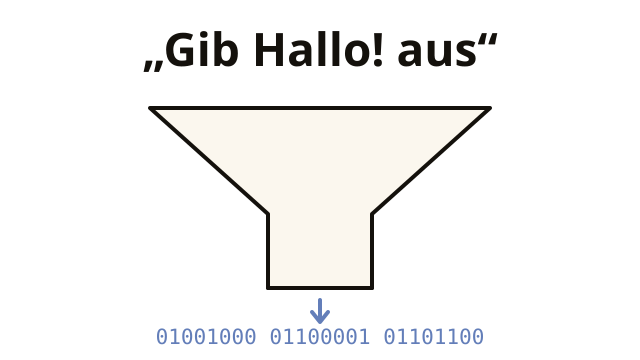

Gute Nachricht: Der Computer entscheidet nichts selbst, also ist er berechenbar: Jeder Fehler hat einen Grund, den man finden kann. Das macht Programmieren lernbar.
Kapitel 1 von 11 · Compiler, Interpreter, JVM
Was ist Programmieren überhaupt?
Ein Computer rechnet Milliarden Schritte pro Sekunde und entscheidet dabei nichts selbst. Was das für dich bedeutet, klärt dieses Kapitel.
DAS PROBLEM
Du schreibst Text. Dein Prozessor versteht nur Nullen und Einsen. Wie passt das zusammen?
HelloWorld.java
System.out.println("Hello!");10111000 01001000 01100001 01101100 …
Der Prozessor führt nur Maschinencode aus, Befehle aus Nullen und Einsen. Zwischen deinem Text und ihm muss also jemand übersetzen. Aber wer, und wann?
- Du schreibst
HelloWorld.java, lesbaren Text. - Der Compiler
javacübersetzt ihn in Bytecode:HelloWorld.class. - Die JVM führt den Bytecode aus und übersetzt ihn dabei in den Maschinencode deines Prozessors.
Compiler, Bytecode, JVM: Was dahintersteckt und warum Java es so macht, zeigt dieses Kapitel.

Danach kannst du
- erklären, was ein Programm eigentlich ist
- den Unterschied zwischen Compiler und Interpreter erklären (mit Bild im Kopf)
- sagen, was Java besonders macht und warum es so streng mit Datentypen ist
- Syntax-, Laufzeit- und Logikfehler auseinanderhalten und sagen, wer sie findet
1.1 Programme: Anweisungen für den Computer
Ein Computer schafft Milliarden Rechenschritte pro Sekunde, entscheidet aber nichts selbst. Er braucht für alles eine Anweisung. Wirklich für alles.
Merk dir das
Ein Programm ist eine Liste von Anweisungen, die der Computer stur von oben nach unten abarbeitet. Wie ein Kochrezept, nur stürzt der Koch bei „eine Prise Salz“ ab: „Prise“ ist nicht exakt definiert.

1.2 Compiler und Interpreter
Der Prozessor versteht nur Maschinencode: Nullen und Einsen. Menschen sind darin erstaunlich schlecht. Deshalb gibt es Programmiersprachen: lesbar für Menschen, übersetzbar in Maschinencode.
Dieselbe Anweisung „gib Hello! aus“ auf drei Ebenen:
Java (Hochsprache)
System.out.println("Hello!");Lesbar. Tippbar. Lernbar.
Python (Hochsprache)
print("Hello!")Andere Sprache, gleiche Idee.
Maschinencode
10111000 01001000 01100001
10111011 00000100 11001101
10000000 11000011 00binary
mush without end …Den führt der Prozessor direkt aus.
Für die Übersetzung von oben nach unten gibt es zwei Strategien:
- Compiler: übersetzt das komplette Programm vorher in Maschinencode. Wie ein Buchübersetzer: Ist das Buch einmal übersetzt, liest es jeder blitzschnell.
- Interpreter: übersetzt Zeile für Zeile, während das Programm läuft. Wie ein Dolmetscher: sofort startklar, aber bei jedem Satz wieder Arbeit.
| Compiler | Interpreter | |
|---|---|---|
| übersetzt … | vorher, komplett | live, Zeile für Zeile |
| startet … | erst nach der Übersetzung | sofort |
| Ausführung ist … | blitzschnell | langsamer (jede Zeile kostet) |
Merk dir das
Der Compiler übersetzt vorher das ganze Programm, der Interpreter übersetzt Zeile für Zeile, während das Programm läuft.
1.3 Bytecode und Java Virtual Machine (JVM)
Java geht einen Mittelweg und kombiniert beide Strategien. So läuft dasselbe Programm auf jedem Betriebssystem.
- Dein Java-Code wird vom Compiler in Bytecode übersetzt (eine Zwischensprache, Dateiendung
.class). - Diesen Bytecode führt die JVM (Java Virtual Machine) auf jedem Gerät aus: Windows, Mac, Linux, dein Toaster (fast).
Merk dir das
Der Bytecode bleibt gleich, nur die JVM ist pro Betriebssystem eine andere. Daher „Write once, run anywhere“: einmal schreiben, überall ausführen.
Level-Up: Was genau ist die JVM?optional
Die JVM ist selbst ein Programm, ein „simulierter Computer“ auf deinem echten.
Häufig genutzten Bytecode übersetzt sie zur Laufzeit in echten Maschinencode (JIT-Compiler, „just in time“). Deshalb werden Java-Programme schneller, je länger sie laufen, as du after dem zweiten Kaffee.
1.4 Statische Typisierung
Java ist statisch typisiert: Jede Variable hat einen festen Typ, und der wird schon beim Übersetzen kontrolliert, nicht erst im laufenden Programm.
Sprachen sind unterschiedlich streng mit Datentypen: Python und JavaScript prüfen erst im laufenden Programm. JavaScript wandelt dabei sogar ungefragt um: bequem, führt aber oft zu Fehlern, die erst viel später auffallen.
Merk dir das
Javas Strenge ist ein Feature. Typfehler meldet schon der Compiler, bevor das Programm beim Kunden läuft.
1.5 Fehlerarten: Syntax-, Laufzeit- und Logikfehler
Der Compiler findet viele Fehler, aber nicht alle. Die drei Sorten Fehler unterscheiden sich darin, wann sie auffallen und wer sie bemerkt.
| Sorte | Was kaputt ist | Wer es merkt |
|---|---|---|
| Syntaxfehler | Ein Regelverstoß: Semikolon fehlt, Klammer offen, Wort falsch geschrieben. | Der Compiler. Das Programm startet gar nicht erst. |
| Laufzeitfehler | Die Regeln stimmen, aber im Lauf passiert etwas Unmögliches: eine ganze Zahl durch null teilen, auf ein Fach zugreifen, das es nicht gibt. | Die JVM, mitten im Betrieb. Das Programm bricht ab. |
| Logikfehler | Alles läuft durch. Es kommt nur das Falsche heraus. | Niemand. Nur du. Oder, schlimmer, der Kunde. |
Merk dir das
- Der Syntaxfehler ist der harmloseste: Er hält dich auf, bevor etwas passieren kann.
- Der Logikfehler ist der teuerste: Weder Compiler noch JVM finden ihn. Dagegen hilft nur Nachdenken und Testen.

Laufzeitfehler heißen in Java Ausnahmen („Exceptions“). Man kann sie auffangen, statt abzustürzen: Kapitel 11. Die zehn häufigsten Meldungen stehen im Panik-Wörterbuch.
Aufgabe 1.5.1: Welche Type Fehler?
Am Zeilenende fehlt das Semikolon.
Ein Regelverstoß. Das Programm wird nie zu Bytecode.
Der Zinsrechner rechnet mit + statt mit *.
Alles läuft, alles ist falsch. Die teuerste Sorte.
Das Programm teilt eine ganze Zahl durch null.
Erst beim Ausführen stellt sich heraus, dass es nicht geht. Auffangen kannst du das: Kapitel 11.
Das reicht für jetzt
- Programm = Liste von Anweisungen, stur von oben nach unten abgearbeitet.
- Compiler übersetzt vorher alles, Interpreter Zeile für Zeile, während das Programm läuft.
- Java macht beides: Compiler → Bytecode (
.class) → JVM. Deshalb „write once, run anywhere“. - Java ist statisch typisiert: Der Compiler prüft die Typen schon beim Übersetzen.
- Drei Sorten Fehler: Syntax (merkt der Compiler), Laufzeit (JVM, Programm bricht ab), Logik (merkst nur du).
Checkpoint
1. Was ist ein Programm?
Genau: eine sture Anweisungsliste. Alles „Intelligente“ daran hat vorher ein Mensch reingeschrieben.
2. Was macht ein Compiler?
Der Compiler übersetzt erst alles, danach läuft das Programm. Zeile für Zeile während der Ausführung übersetzt der Interpreter.
3. Warum läuft Java-Bytecode auf Windows, Mac und Linux?
„Write once, run anywhere“: Der Bytecode bleibt gleich, die JVM des jeweiligen Systems führt ihn aus.
4. Java ist statisch typisiert. Was bedeutet das praktisch?
Der Compiler prüft die Typen beim Übersetzen. Das ist streng, verhindert aber Typfehler zur Laufzeit.